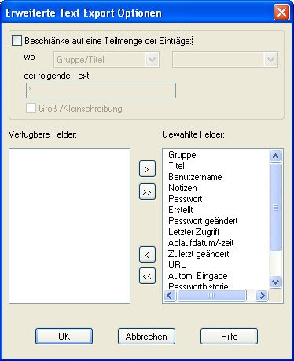

Warnung: Der Export von sensiblen Informationen aus einer Password Safe Datenbank in einer Textdatei bringt erhebliche Sicherheitsprobleme mit sich. Bei diesem Vorgang wird eine ungeschützte Kopie der Passwörter in der Datenbank erstellt. Das Löschen dieser Kopie nach deren Verwendung ist nicht ausreichend und darum müssten andere Anwendungen eingesetzt werden, um die Daten "garantiert" zu löschen (z.B. externe Hilfsmitteln zum "Schreddern" der Daten). Der Export von sensiblen Informationen aus einer Password Safe Datenbank umgeht die Sicherheit der Anwendung.
Exportierter Text wird:
Importierter Text setzt voraus dass:
Die Titel-Zeile enthällt für einen vollständigen Export standardmäßig folgende Felder, getrennt mit einem TAB-Zeichen.
Beim Exportieren von Daten, können Sie auf "Erweitert" drücken, um eine beliebige Anzahl dieser Felder auszuschließen in der Titel-Zeile und den Datensätzen. In der Option "Erweitert" (siehe unten) definieren Sie eine Untermenge an Einträge die Sie Exportieren wollen.

Beim Importieren muss die eingebaute Titel-Zeile exakt die Elemente als 'Spalten-Köpfe' enthalten, wie oben definiert. Wenn irgendein 'Spalten-Kopf' wiederholt wird, werden nur die Daten des letzten übernommen beim Importieren. Wenn ein 'Spalten-Kopf' nicht in der obigen Liste vorkommt, wird er beim Importieren nicht berücksichtigt. Die Daten müssen mit dem Trennzeichen unterteilt sein wie es im Dialog Text Importieren definiert wurde.
| Spalte Kopf/Feld | Kommentare |
| Gruppe/Titel | Wenn vorhanden, werden Gruppen mit Punkt getrennt ('.'). Das Feld Titel darf nicht leer sein, nur Leerzeichen oder überhaupt Trennzeichen enthalten. |
| Benutzername | |
| Passwort | kann kein Leerzeichen oder überhaupt leer sein. |
| URL | |
| Autom. Eingabe | |
| Erstellungszeit | Siehe Hinweis 1 unten |
| Passwort Änderungszeit | Siehe Hinweis 1 unten |
| Letzter Zugriffszeit | Siehe Hinweis 1 unten |
| Passwort Ablaufdatum | Siehe Hinweis 1 unten |
| Datensatz Änderungszeit | Siehe Hinweis 1 unten |
| Historie | Siehe Hinweis 2 unten |
| Notizen |
|
|
Zeit-Felder können eines der 5 folgende Formate haben: |
| 1. | yyyy/mm/dd hh:mm:ss | z.B., 2007/01/26 19:31:25 |
| 2. | ddd MMM dd hh:mm:ss yyyy | z.B., Fri Jan 26 19:31:25 2007 |
| 3. | yyyy-mm-ddThh:mm:ssn | z.B., 2007-01-26T19:31:25 |
| 4. | 0 | das Feld unbesetzt lassen |
| 5. | now | die Zeit des Importierens anwenden |
wo:
| yyyy | das volle Jahr. Wert liegt zwischen 1970 und 2038. |
| mm | der Monat; z.B. 01 = Januar, 02 = Februar usw. |
| dd | der Tag im Monat |
| MMM | die Kurzform des Monats; z.B. Jan = Januar, Feb = Februar usw. |
| ddd | die Kurzform des Wochentages; z.B. Mon = Montag, Tue = Dienstag (Tuesday) usw. |
| hh | die Stunde (24-teilig). |
| mm | die Minuten |
| ss | die Sekunden |
asctime' und Format '3' ist konform zum ISO 8601 Standard.
|
Die Passworthistorie im exportierten Datensatz wird in einem Textfeld abgebildet durch eine Kopf gefolgt von einer Anzahl Felder mit den alten Passwörtern: |
Passworthistorie Kopf:
| 1 hexadezimales Zeichen | Status zum Speicher der Passworthistorie für diesen Eintrag (0 = nein; 1 = ja) |
| 2 hexadezimale Zeichen | Maximum Anzahl an Einträgen für diesem Satz |
| 2 hexadezimale Zeichen | Anzahl der aktuelle abgespeicherten Einträge |
Jeder Eintrag der Passworthistorie:
| 8 hexadezimale Zeichen | Zeit wann das alte Passwort gesetzt wurde |
| 4 hexadezimale Zeichen | Länge des alten Passwortes |
| Zeichen String | altes Passwort |